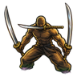
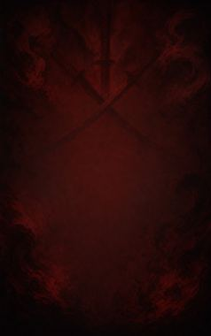
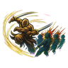
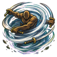
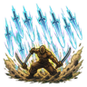

Three-Sword Stance C
Take up the third sword for a fight: heavy, fierce blows. (Needs a bladed weapon.)
| Rank | Chakra | Cooldown | Class level |
|---|---|---|---|
| C | 14 | 15 s | 3 |

Technique trees › Fighting and weapon styles
5 techniques · Taijutsu tab
Unlocks through World of Naruto's own trees, a gene, a build choice or a profession.

Take up the third sword for a fight: heavy, fierce blows. (Needs a bladed weapon.)
| Rank | Chakra | Cooldown | Class level |
|---|---|---|---|
| C | 14 | 15 s | 3 |
Three blades cross through one enemy. (Needs a bladed weapon.)
| Rank | Chakra | Cooldown | Class level |
|---|---|---|---|
| C | 14 | 15 s | 6 |

Leap through a line of enemies, all three blades swinging. (Needs a bladed weapon.)
| Rank | Chakra | Cooldown | Class level |
|---|---|---|---|
| B | 24 | 25 s | 9 |

A spinning tornado of blades around the user. (Needs a bladed weapon.)
| Rank | Chakra | Cooldown | Class level |
|---|---|---|---|
| A | 40 | 50 s | 14 |

S-rank. Nine phantom blades fall on everything in front of the user. (Needs a bladed weapon.)
| Rank | Chakra | Cooldown | Class level |
|---|---|---|---|
| S | 80 | 250 s | 18 |